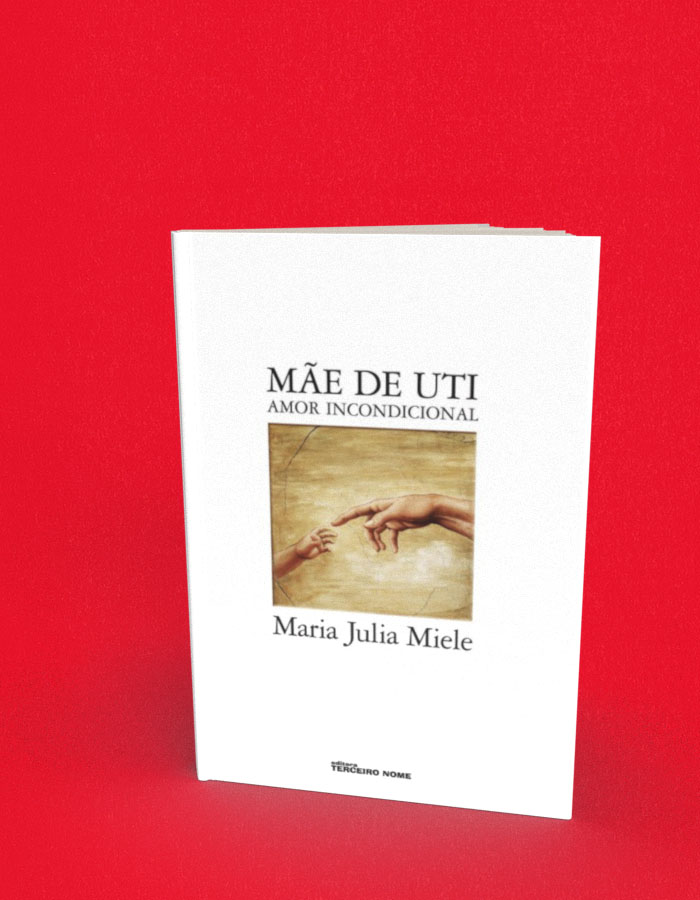

Mãe de UTI amor incondicional
A compra acontece no site da livraria, em uma nova aba. Consulte lá os preços e a disponibilidade. Procure pelo título ou ISBN deste livro.
- Autoria / créditos
- Maria Julia Miele
- Páginas
- 176
- Formato
- 15 x 22 cm
- Acabamento
- brochura
Sobre o livro
Como disse Gilberto Dimenstein ao apresentar este livro, "é absolutamente impossível não se emocionar com o relato de Maria Julia Miele sobre a perda de Sofia, sua filha". A autora mergulha de corpo e alma no mundo das UTIs. Com um texto doloroso mas envolvente, nos mostra como lidou com a dor e fez dela uma fonte de ensinamento e solidariedade.
Maria Julia Miele é massagista e professora de terapia corporal diplomada no TianJin College of Traditional Chinese Medicine (China). Atualmente divide seu tempo entre o atendimento como terapeuta corporal e a coordenação do Instituto Abrace, onde conta com uma equipe multidisciplinar que desenvolve assistência humana e social, vendo, ouvindo e amparando esses pais e mães. O grupo oferece, ainda, um site interativo e informativo onde se unem pais e mães que buscam conhecimento sobre diversos temas relativos a UTI e que trocam experiências e vivências como bravos cuidadores.
← Voltar ao catálogo